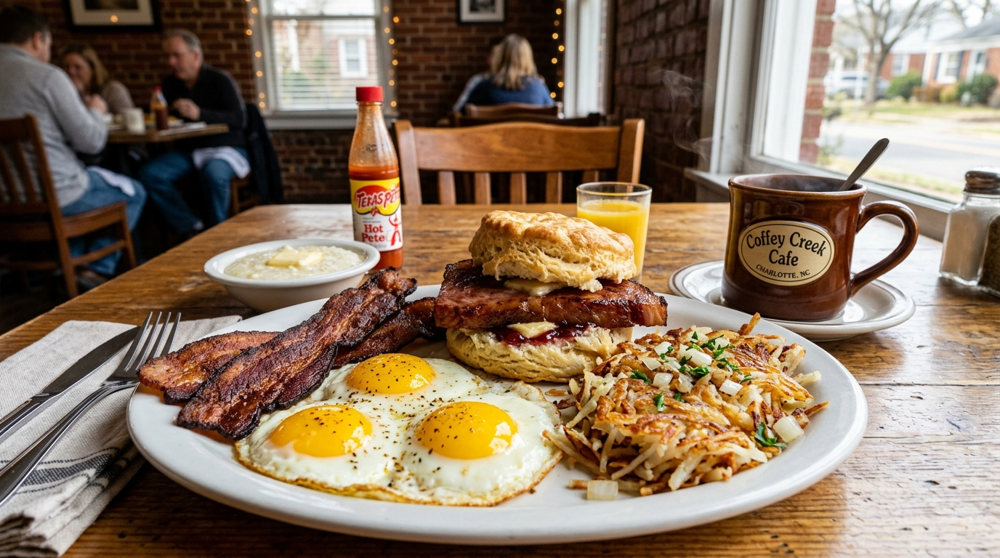

Southern Triple-Egg Plates
Cooked to order with your choice of thick crispy bacon, savory sausage patties, or authentic Carolina livermush with buttered grits.
Discover Breakfast Craft →Serving Center Park workers and Charlotte families since 1987. From triple-egg Southern breakfast plates and country ham biscuits to hot griddled deli Reubens and freshly brewed diner coffee.

Freshly cracked eggs, Carolina livermush, thick-cut country ham, and house deli lunches built fresh every weekday morning.
Cooked to order with your choice of thick crispy bacon, savory sausage patties, or authentic Carolina livermush with buttered grits.
Discover Breakfast Craft →Salt-cured hickory country ham served hot inside warm buttermilk biscuits with melted butter or berry jam.
Explore Biscuit Lineup →Corned beef, Swiss cheese, sauerkraut, and thousand island dressing grilled hot on thick marble rye bread.
View Deli Lunch Craft →